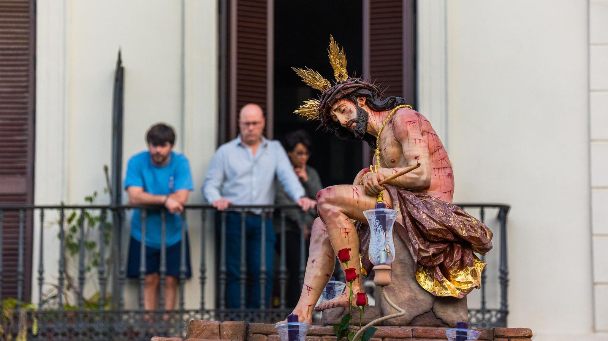
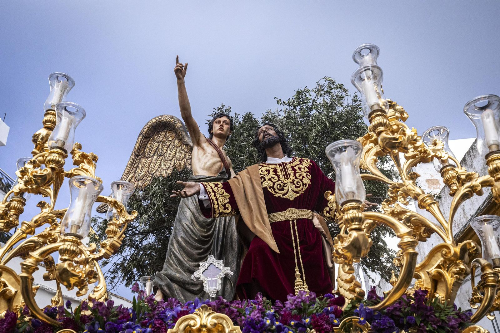

🕒 16:00 - 02:00
SENTENCIA
⛪ El Cerro de los Mártires

🕒 16:00 - 02:00
CORONACIÓN
⛪ C/ San Onofre Nº5
🕒 18:00 - 01:30
BORRIQUITA
⛪ La Salle
🕒 18:00 - 01:30
HUMILDAD Y PACIENCIA
⛪ Parroquia San Servando y San Germán
🕒 18:00 - 01:30
COLUMNA
⛪ Iglesia Mayor

🕒 17:30 - 01:00
HUERTO
⛪ Parroquia de la Divina Pastora
🕒 17:30 - 01:00
PRENDIMIENTO
⛪ Parroquia San José Artesano
🕒 17:30 - 01:00
CARIDAD
⛪ Parroquia Vaticana y Castrense de San Francisco

🕒 18:00 - 00:30
AFLIGIDOS
⛪ Iglesia del Cristo